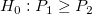
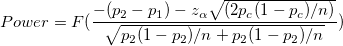
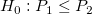
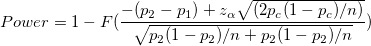
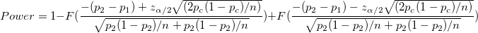
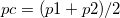

/math-4eac934b016e115b457219debaf8a029.png "H_0: p_1=p_2\!")
One-sided power:


One-sided power:


Two-sided power

n:sample size
P1:population proportion 1
P2:population proportion 2

p1:the sample proportion 1
p2:the sample proportion 2
F:the cumulative distribution function of the standard normal distribution
Origin uses an iterative algorithm with the power equation. At each iteration,the power for a trial sample size are evaluated and iteration stops when the power evaluated reaches the values which corresponding to an integer sample size, and which is nearest to, yet greater than, the target value.